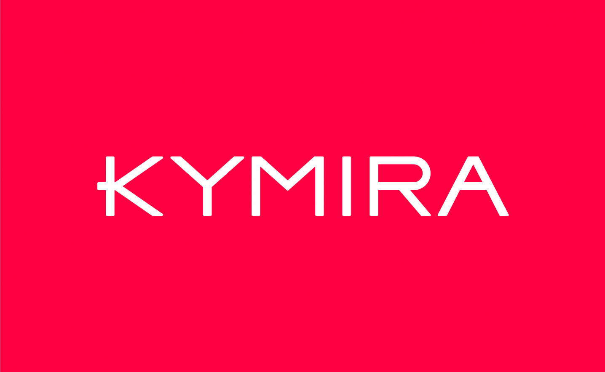
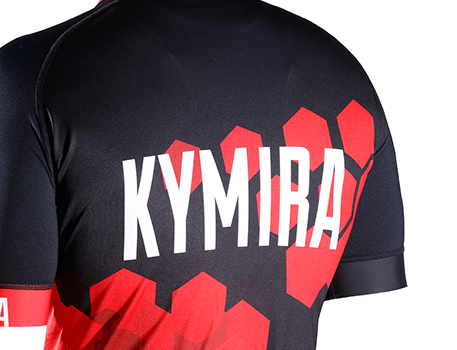
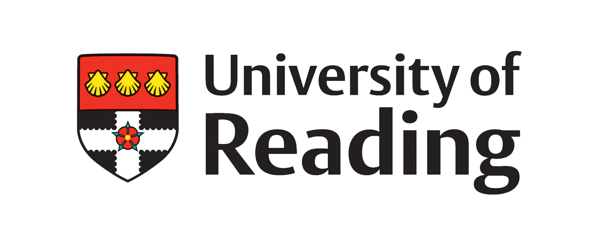
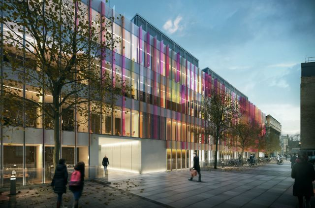

Skills
The projects I have worked on allowed me to develop a large array of skills. The programming languages I am familiar with include: C++, C#, Java and Python. I have experience with non-relational databases such as MongoDB and relational databases such MySQL and Azure SQL. I exceed at using different tools such as Git, Bash and Shell programming to support my development process. The university allowed me to familiarize myself with the Android development environment which increased my set of skills even further. I have experience with the framework .NET Core that I have used for web development and I managed to utilize the features of the Azure platform. The operating systems that I have used for development include: Windows 10 and Ubuntu.
Work Experience
KYMIRA Sport
I started in the beginning of January, 2021. The company hired me as a data scientist and my main responsibility was to process the entries recorded by the company and organize them in a database. The way I achieved that was by writing an API in Python and calling in an ETL tool in Azure. That allowed me to read data in a raw format from MongoDB and transform it into something easier to work with.
 University of Reading
In the beginning of January of 2021 I also got offered a position for a tutor assistant for the programming course in the Reading University. So accepted it and proceeded to work alongside my other internship. I needed to assist first year students with their university project and also support the lecturer in the tutorial sessions when there were any questions from the students.

Oxford Immune Algorithmics
I started in the beginning of January, 2020. I was looking for a way to practice my skills and the company took me as an IT assistant. My main responsibilities included the creation of a network that allows the connection of multiple devices to the main server. And also the automatic backup of company files to a cloud vendor.
